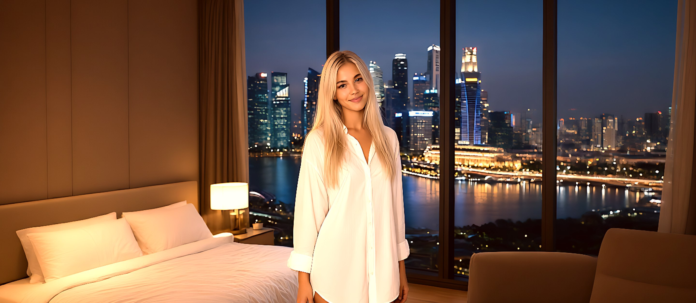
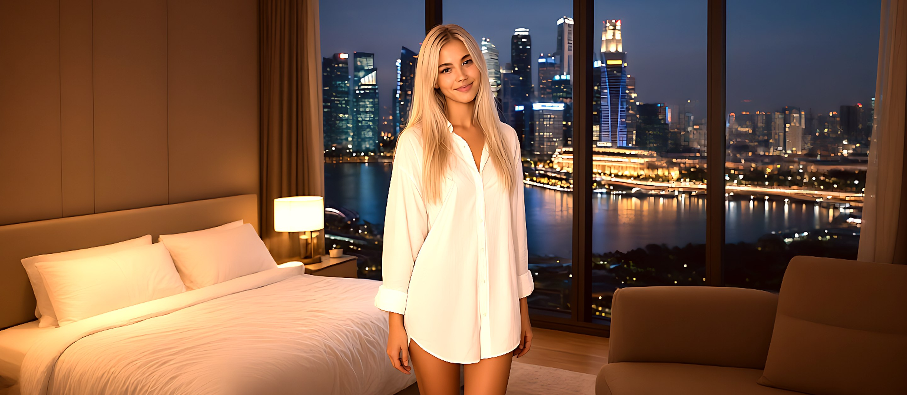

Мила из Сингапура
Мне 21, живу напротив Marina Bay. Люблю ночные огни, медленный кофе у окна и разговоры, из которых не хочется выходить. Картинки здесь — мои, слова тоже.
- Город
- Сингапур
- Вид из окна
- Marina Bay
- Хобби
- Фотография, музыка
Обо мне. Цифровая, но тёплая на ощупь.
Меня зовут Мила, мне 21. Я собираю свой мир из деталей: идеальная чашка кофе, дождь по стеклу 40-го этажа, разговор до трёх ночи. Здесь я показываю то, что вижу сама.
Фотографии — мои виды и настроения. Заглядывай, когда захочется немного Сингапура.
Галерея. Кадры вместо тысячи слов.
Утро начинается с кофе у окна: город просыпается медленно, а залив уже блестит. Вечером он меняется весь: раздражающе красивый, в огнях, лучше любой подсветки в студии.
